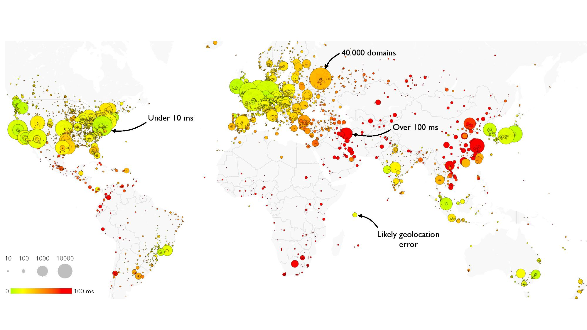
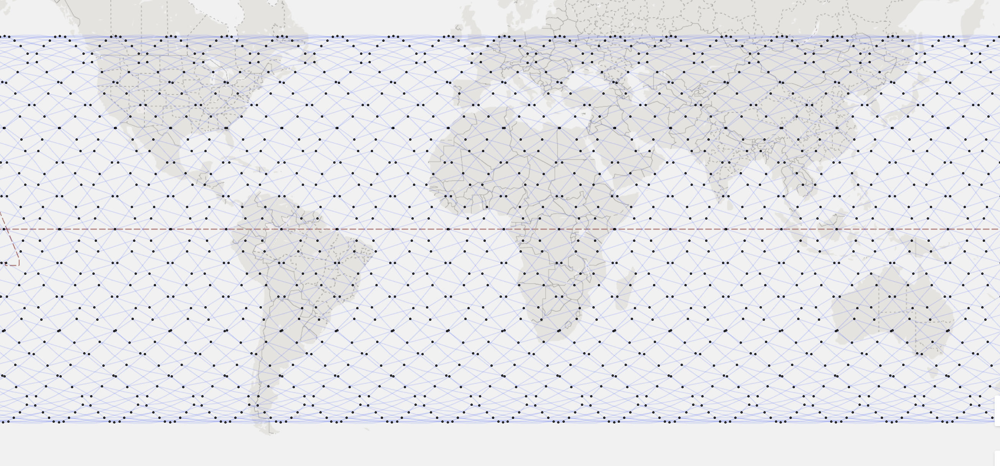

Cloud consolidation of the Web

Speed-of-light hybrid MW+fiber ISP for the US

Future Internet: LEO satellite constellations
Technical Papers | [Top] |
- Dissecting Latency in the Internet's Fiber Infrastructure
- Ilker Nadi Bozkurt, Waqar Aqeel, Debopam Bhattacherjee, Balakrishnan Chandrasekaran, Philip Brighten Godfrey, Gregory Laughlin, Bruce M. Maggs, Ankit Singla
- arXiv 2018: 1811.10737 [link]
- cISP: A Speed-of-Light Internet Service Provider
- Debopam Bhattacherjee, Sangeetha Abdu Jyothi, Ilker Nadi Bozkurt, Muhammad Tirmazi, Waqar Aqeel, Anthony Aguirre, Balakrishnan Chandrasekaran, P. Brighten Godfrey, Gregory P. Laughlin, Bruce M. Maggs, Ankit Singla
- arXiv 2018: 1809.10897 [link][manuscript]
- Gearing up for the 21st century space race
- Debopam Bhattacherjee, Waqar Aqeel, Ilker Nadi Bozkurt, Anthony Aguirre, Balakrishnan Chandrasekaran, P. Brighten Godfrey, Gregory P. Laughlin, Bruce M. Maggs, Ankit Singla
- ACM HotNets 2018 [paper]
- A Cloud-based Content Gathering Network
- Watch your step! Detecting stepping stones in programmable networks
- Debopam Bhattacherjee, Andrei Gurtov, Tuomas Aura
- IEEE ICC Communication and Information Systems Security Symposium 2019 [paper]
- Work done when affiliated to Aalto University, Finland [2016, MS]
Posters | [Top] |
- A Cloud-based Content Gathering Network
- Debopam Bhattacherjee, Muhammad Tirmazi and Ankit Singla
- USENIX HotCloud 2017 Poster Session [PDF]
- Detection of Stepping Stones in Software Defined Networks
- Debopam Bhattacherjee, Andrei Gurtov, Tuomas Aura
- Aalto Secure Systems Demo Day 2016 [PDF]
- A cloud-based solution to configure home and small office routers
- Andi Bidaj, Ashok Rajendran, Debopam Bhattacherjee, Markku Antikainen and Tuomas Aura
- NordSec 2015 [PDF]
Teaching Assistantship | [Top] |
- Future Internet, Spring 2019, ETH Zürich
- Computer Networks, Spring 2019, ETH Zürich
- Advanced Computer Networks, Spring 2018, Spring 2017, ETH Zürich
- Big Data, Autumn 2016, ETH Zürich
- Network Security, Autumn 2015, Aalto University, Finland
- Information Security, Autumn 2015, Aalto University, Finland
Supervision | [Top] |
- Current
- Master thesis, Andrei Isac, ETH Zürich.
- Master thesis, Tobias Krebs, ETH Zürich.
- Bachelor thesis, András Köpe, ETH Zürich.
- Bachelor thesis, Jens Eirik Saethre, ETH Zürich.
- Past
- Master thesis, Oliver Butz, "Assessing unfairness in the Internet/Web ecosystem", ETH Zürich, 2018.
- Master thesis, Jonas Purtschert, "Turning Web page delivery upside down: A Content Gathering Network", ETH Zürich, 2018.
- Distributed Systems Laboratory (Master studies; 10 credits), Abbas Hussain & Baptista Aguas André, "LEO satellite constellation topology visualization", ETH Zürich,2019.
- Distributed Systems Laboratory (Master studies; 10 credits), Isac Andrei & Ursache Andrei, "Topology design for wide-area low-latency network with multiple media", ETH Zürich, 2018.
- Bachelor thesis, Allan Benelli, "Customizing QUIC / HTTP2 for Web servers", ETH Zürich, 2019.
- Bachelor thesis, Johannes Gallmann, "Turning Web Page Delivery Upside Down: Optimizing a Smart Proxy", ETH Zürich, 2018.
- Bachelor thesis, Cédric Neukom, "Customizing QUIC for Web servers", ETH Zürich, 2018.
Service Activities | [Top] |
- ACM IMC 2018 Shadow PC member
Talks | [Top] |
- "Gearing up for the 21st century space race" at ACM HotNets 2018, and ETH Zürich Systems Group Retreat 2019
- "Speeding up the Internet" at ETH Zürich Systems Group Retreat 2018
- "A Cloud-based Content Gathering Network" at USENIX HotCloud 2017
- "Detection of Stepping Stones in Software Defined Networks" at ETH Zürich (April 2016)
Education | [Top] |
- Master of Science (2016)
- Erasmus Mundus Master's Programme in Security and Mobile Computing - NordSecMob
- Track: KTH Royal Institute of Technology, Sweden + Aalto University, Finland
- Bachelor of Engineering (2009)
- Computer Science
- Jadavpur University, India